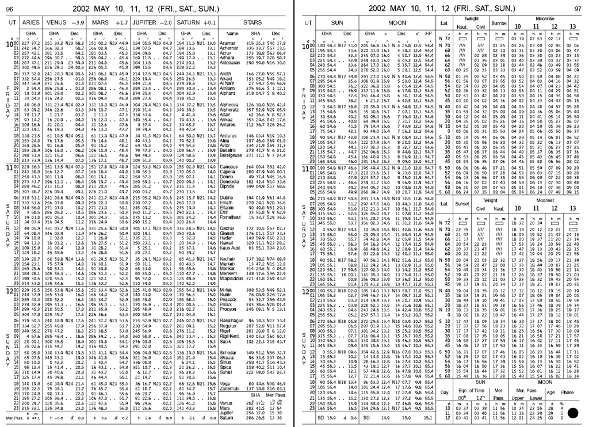

Columna de Informática - Yo no fui
Índice
⚠️ Las columnas están ordenadas de manera inversa, la más reciente está primero.
1. Datos de la Columna
- Título
- Columna informática de Yo no fui.
- Sinopsis
- Aprender qué es la informática y los conceptos necesarios para entender el día a día de lo que sucede alrededor de la computadora. Explicaciones de hechos pasados y presentes relevantes para comprender lo que sucede a nuestro alrededor.
- Tema
- Informática
- Recorte
- Conocimiento general de la informática
- Enfoque
- Conceptos y curiosidades de la informática. Explicaciones de noticias actuales del tema.
- Audiencia
- Mayores de ~12 años, con conocimiento mínimo de la informática.
- Identidad Sonora
- Alegre, amena.
- Género
- Columna narrativa. Debates o entrevistas cortas.
- Formato
- Debate de 20’.
- Estructura
- Columna con introducción, desarrollo y conclusión.
- Introducción motivada por una pregunta disparadora (P. ej. ¿qué es un algoritmo?)
- Desarrollo con posible intervención de la personas presentes en el piso.
- Conclusión que ofrezca una pregunta o moraleja para el público.
- Alojamiento
- Vivo por radio. Internet como recorte de la columna.
- Distribución
- Spotify, página Web personal, open.audio u otra plataforma Funkwhale. Posiblemente, redes sociales (Mastodon y privativas).
- Identidad gráfica
- -
- Licencia
- Creative Commons + Reconocimiento + Compartir Igual 4.0 Internacional (CC-by-SA): http://creativecommons.org/licenses/by-sa/4.0/ Ante modificaciones, se debe especificar la obra original y sus autores.
2. Columna 5: ¿Quién fue Manuel Sadosky?
📻 Emisión al aire:

Figura 1: Manuel Sadosky de pié al lado de Clementina.
En la columna de hoy, hablaremos del doctor Manuel Sadosky. Pero antes, daremos un poco de contexto, la reforma universitaria de 1918, y cómo afectó después a las universidades. Sadosky junto con otros científicos trajeron y utilizaron la primer computadora a argentina, que por la música que emitía, la llamaron Clementina. ¿Quieren saber un poco de esta historia y quiénes fueron las primeras personas que programaron en Argentina? ¡Prepárense unos mates y escuchen este audio!
🖼️ Imágen: Manuel Sadosky y Clementina. Imágen bajo el dominio público. Obtenido desde Wikimedia Commons.
{kind=link}
2.1. Guión
- Contexto: Universidades desde el siglo XIX hasta 1918:
- Católicas mayormente (UNC), estudiantes con dificultades para ingresar.
- Ley de Avellaneda: el Gobierno Nacional dicta sus estatutos, designan las autoridades y profesores y dependen administrativamente del gobierno.
- Reforma universitaria: 1918
- Importante movimiento estudiantil: autonomía del poder político, gobierno representado por docentes y estudiantes, asignación por concursos públicos, libertad de pensamiento.
- Sadosky nace el 13 de abril de 1914, cursó primaria y secundaria en la Escuela Normal Mariano Acosta (si no entiendo mal, es una escuela pública). En 1940 se graduó como Doctor en Ciencias Fisico-Matemáticas de la UBA y ejerció la docencia en la Universidad de La Plata.
- Becado para ir a Francia durante 1946-1948, investigó en Italia. Atestiguó el surgimiento de las primeras computadoras.
- Publicó «Cálculo numérico y gráfico», primer texto en castellano de su tipo. 1952.
- Vuelve a la docencia en 1955.
- «Cálculo diferencial e integral» junto con Dra. Rebeca Guber. 1956.
- Dr. Manuel Sadosky con Gonzáles Domínguez, Rey Pastor y otros profesores de la UBA comenzaron a incluir la Computación en 1957.
- 1957 las universidades son autónomas y autárquicas.
- Este contexto impulsa la designación de personas destacadas y el desarrollo de la computación.
- Se radican extranjeros con importantes conocimientos matemáticos.
- Impulsan proyectos de desarrollo de las Ciencias.
- La Facultad de Ciencias Exactas y Naturales de la UBA tiene como vicedecano al Dr. Manuel Sadosky en este año.
Se compró una Mercury Ferranti que llegó en 1960. 152.099 libras esterlinas, (equivalen a USD 4.500.000 en el 2011).
¿Vamos de compras en 1960?
- Ultrathin (?): 18 metros y medio de largo, media tonelada de peso.
- Rápida (?): Tres horas para encender.
- Fácil de instalar (?): Red eléctrica distinta a la convencional.
- ¿Gigas de RAM DDR5? Nah, de válvulas mejor: 1K de palabras de 48b = 4750 Bytes = ~4Kb
- ¿Disco rígido sólido? ¿para qué?: Disco de tambores magnéticos, 4 tambores de 8K cada uno.
- ¿Monitor de 500 pulgadas? Ni ahí: Entrada/Salida con cinta de papel perforado, impresora 30 caracteres por segundo. Pero le adaptaron un lector de tarjetas perforadas nacional.
- ¿Teclado? ¿para qué? nah, no tiene.
- Un parlante (con musiquita de «Oh my darling, Clementine»).
- ¿Windows 60’? No, no… Programas: Ensamblador orientado al cálculo, Autocode.
- Luego, se creó el compilador y lenguaje COMIC en Argentina gracias a Liana Lew, Noemí García, Wilfred Durán, Ana Zoltran Torres, Clarisa Cortés.
¿Para qué se usaba?
Se usaba para cálculos matemáticos: pautas en el sistema de ahorro y préstamos, estudio de ríos patagónicos, cálculos astronómicos (órbita del cometa Halley), censos comerciales, análisis del funcionamiento de reactores nucleares, investigaciones cardiológicas, traducciones (ruso-español).
Encargada de programarla: Cecilia Berdichevsky.
- La Universidad de Buenos Aires (UBA) Y la Universidad del Sur (UNS) quisieron hacer su computadora: la CEFIBA (1962).
- UBA: La CEFIBA (1962) a cargo del Ing. Humberto Ciancaglini.
- UNS: la CEUNS (1962) a cargo del Ing. Jorge Santos → Procesaba con números racionales.
- ¿Quién tiene idea de cómo programar esta computadora? → Fundó el Instituto del Cálculo en 1962.
- Autocode: un sistema para la Ferranti Mercury - 1961
📚 Leer los agradecimientos de la nota preliminar del manual de Autocode de García Camarero del IC (ver Bibliografía)
«Hemos de agradecer la paciente y minuciosa lectura de nuestra primera redacción, así como sus múltiples puntualizaciones, a la Dra. Cicely M. Popplewell. También agradecemos la valiosa colaboración de la Dra. R.Ch. de Guber. Buenos Aires, octubre de 1961» – E. García Camarero
- COMIC : Lenguaje de programación creada por IC - 1965
- Autocode: un sistema para la Ferranti Mercury - 1961
- ¿Qué pasó luego? La noche de los bastones largos (29 de julio de 1966, en dictadura de Onganía).
Intervencion de las Universidades Nacionales.
Humillados violentamente: estudiantes, docentes y graduados, los retiraron a la fuerza del edificio, y afuera, los hacían pasar uno a uno para pegarles con palos o culatas.
¿Por qué los militares hicieron eso?
- Docentes, alumnos y graduados, hasta Warren Ambrose, profesor del MIT y de la UBA, fueron detenidos.
- Renuncias y éxodo de investigadores - Fuga de cerebros . Sadosky se exilió más tarde, en ~1974.
- El IC, Clementina y la carrera de Computador Científico se destruyó.
- Sucesivas protestas estudiantiles y represión.
- Prohibidas reuniones en la facultad.
- Clementina deja de funcionar y la computación entra en una época oscura por varios años.
- ¿Qué más hizo Sadosky?
- Montevideo: ayudó a la creación del IC allí. Dr. Honoris Causa.
- Fundó la consultora Asesores Científico Técnicos, primera empresa especializada en desarrollo de software del país.
- Fue Secretario de Ciencia y Técnica en 1983 (democracia de Raúl Alfonsín).
- Promueve la Escuela Superior Latinoamericana de Informática (ESLAI), un paralelo del Balseiro en computación. Desfinanciada por Menem en 1990.
🤔 Preguntas: ¿qué rol tuvo la universidad pública para Sadosky? ¿creen que la violencia han resuelto los problemas que tuvimos o por el contrario?
¡Listo! 💣 Bomba poneme Clementina 🎵 (ver link en Bibliografía).
Algunos datos de color:
- CONICET: Se funda en 1958
- Otra personalidad importante: René Favaloro: Escuela 45, Colegio Nacional Rafael Hernández, Universidad Nacional de La Plata (UNLP), Hospital Policlínico. Escuelas y universidades públicas.
2.2. Bibliografía
- «Sadosky por Sadosky vida y pensamiento del pionero de la computación argentina». Raúl Carnota, Carlos Borches. Fundación Sadosky.
¿Para qué tareas se utilizó Clementina?
«Clementina, la primera computadora que tuvo la UBA», Daniel Balmaceda. Artículo del diario La Nación del 17 de diciembre del 2019. https://www.lanacion.com.ar/sociedad/clementina-primera-computadora-tuvo-uba-nid2315966/
Canción de Clementina.
«Oh, my darling Clementine» interpretada por Rabanus Flavus (Peter Gerloff). Archivo MIDI disponible en Wikimedia commons. Obra bajo la licencia Creative Commons 0 (CC0 1.0). https://commons.wikimedia.org/wiki/File:O_My_Darling_Clementine.mid
Cecilia Berdichevski y las mujeres que trabajaron con Clementina y COMIC.
«Las mujeres de Clementina». Departamento de Computación de la Facultad de Ciencias Exactas y Naturales, UBA. https://www.dc.uba.ar/las-mujeres-de-clementina/
COMIC el primer compilador argentino.
«COMIC el lenguaje de programación y compilador del Instituto de Cálculo en 1965». Durán Salvador, Wilfred Oscar (2018). Ediciones del domo.
- «Panorama de la historia de la Computación Académica en la Argentina. Jorge Aguirre.
Nota Preliminar de García Camarero.
«Autocode un sistema simplificado de codificación para la computadora Mercury» Instituto del Cálculo UBA. 1961.
3. Columna 4: ¿Qué es el filtro burbuja? ATTACH
📻 Emisión al aire:

Cuando buscamos algo en Internet, ¿por qué los resultados son diferentes a los de otras personas? ¿cómo se filtran y ordenan esos resultados? ¿cómo sabe el buscador que deseo esos resultados? ¿esto puede producir algún efecto social? Hablamos de los Filtros Burbujas, la cámara de eco y cómo los buscadores y páginas Webs más habituales nos muestran una porción de Internet.
🖼️ Imágen: Bubbles Closeup - Bajo la licencia Creative Commons 0 (Dominio Público). https://store.kde.org/p/2056567
3.1. Guion
- Nada de Repaso : «¿Se acuerdan que hablamos de Algoritmos y que la IA es un algoritmo? ¿que mencionamos a los algoritmos de sugerencias?».
- Definición: state of intellectual isolation that can result from personalised searchs.
- ¿Qué es? Podríamos decir que es un fenómeno medio sociológico-tecnológico.
Mostremos cómo funciona con buscar Messi y ver los resultados: Buscamos en Google «Messi», y buscamos «Messi» en Google con Tor. Probemos con siglas: WP, BP…
📚 Tener a mano el artículo E. Bozdag, «Bias in algorithmic filtering and personalization», Springer. Página 212.
- ¿Cómo funciona? ¿cómo recolectan la información? ¿por qué? → Cómo se arman las burbujas.
- Historial, páginas que visitamos, búsquedas hechas, ubicación geográfica.
- Caso extremo: Facebook tracks users with like button: Web beacons (baliza/faro Web)
- ¿Cómo funciona? ¿cómo recolectan la información? ¿por qué? → Cómo se arman las burbujas.
- Efectos: Exposición a Echo Chamber → más Fake News
- No solo funciona para las ads → ¡también para lo que leemos en las redes!
- Dinámicas: Estás solo, es invisible (¿es neutral/unbiased? es casi imposible saberlo), no se elige entrar.
- Echo Chamber: Creencias amplificadas por repetición en un sistema cerrado y aislado de refutaciones.
- Se repiten noticias para autojutificarse: ¿y si agregamos Fake News?
- «nos cierran a nuevas ideas»
- «nuestros intereses son los únicos que existen»
- No alcanzar otros recursos: una vez adentro de la Echo chamber, ¿se puede buscar otros artículos fácilmente?
- Meteoro y Bomba citaron hace un tiempo a Chris Palmer de la EFF: «You’re getting a free service, and the cost is information about you. And Google and Facebook translate that pretty directly into money.»
(Opcional) ¿Alguna vez intentaron usar redes sociales libres? ¿qué sucede al principio?
¿Cómo es no estar en el filtro?
- Alternativas:
- Tecnológicas: Metabuscadores: Startpage; Otros: DDG, Yacy…
- Personales: ¿Qué podemos hacer como usuarixs? → ¿usar Tor?
- ¿Sirve navegar en privado? → Hay que saber navegar en privado con Tor.
- Hotel California: «You can check out any time you like/But you can never leave»
- Aislamiento de los usuarios de otras redes sociales: no proveen contenidos de otras redes.
- Afecta negativamente a la Neutralidad en la red (acceso equitativo de la información).
🤔 Preguntas:
- Ahora que conocen este fenómeno: ¿Consideran importante aprender de informática? ¿Y que estaría bueno conocer cómo funcionan estos algoritmos de sugerencia?
- Cada noticia que ustedes miran en redes sociales: ¿no les parece que conviene chequearlas con varias fuentes? ¿Habitualmente se preguntan si son verdad o no?
🎶 ¿Se podrá terminar con la canción Hotel California? ~03:04
3.2. Bibliografía
- https://www.theguardian.com/technology/2010/nov/22/tim-berners-lee-facebook
- https://www.huffpost.com/entry/algorithms-and-the-filter_b_869473
- https://www.technologyreview.com/2015/09/16/166222/facebooks-like-buttons-will-soon-track-your-web-browsing-to-target-ads/
- https://www.eff.org/deeplinks/2011/10/facebook%E2%80%99s-hotel-california-cross-site-tracking-and-potential-impact-digital-privacy
- https://misq.umn.edu/understanding-echo-chambers-and-filter-bubbles-the-impact-of-social-media-on-diversificationi-and-partisan-shifts-in-news-consumption.html
- Pariser, Eli. «The Filter Bubble: What the Internet is Hiding from You». Penguin Press. 2011.
4. Columna 3: ¿Qué es un algoritmo? ATTACH
📻 Emisión al aire:

«El algoritmo me sugiere estas pelis», «el algoritmo sabe lo que te gusta»… Pero… ¡¿Qué es un «algoritmo»?!
Revelaremos el significado de esta palabra que siempre usamos. Eso que está detrás de las páginas Webs y que nos sugiere cosas, pero que nunca la vimos. Un algoritmo, ¿qué es? ¿la IA es un algoritmo? ¿las computadoras usan algoritmos? ¿las personas usamos algoritmos?
🖼️ Imágen: Flowchart por Gautier Poupeau - Bajo la licencia Creative Commons Atribución (CC-by 2.0). Obtenido desde https://flic.kr/p/rt5Q1d
4.1. Guion
Algoritmo
Quizá del lat. tardío *algobarismus, y este abrev. del ár. clás. :
ḥisābu lḡubār«cálculo mediante cifras arábigas».
- m. Conjunto ordenado y finito de operaciones que permite hallar la solución de un problema.
- m. Método y notación en las distintas formas del cálculo.
– RAE (https://dle.rae.es/algoritmo)
Definición de la RAE.
- Sumémosle «operaciones no ambiguas».
- ¿Dice del «árabe clásico»? → ¡no es un concepto nuevo!
Se piensa que el nombre se debe por el matemático Abu Abdallah Muḥammad Ibn Mūsā Al-Jwarizmī (cariñosamente como: Abu Yāffar, al-Juarismi o Algorithmi), cerca de 820 dc.
- ¿Qué algoritmos usamos día a día?
- Cuando sumamos y restamos en un papel.
- ¿Qué hacés todas las mañanas al levantarte?
- ¿Qué tiene que ver con la compu?
- Las computadoras «computan»: calculan: ¿cómo?
- La computadora usa «programas»: conjunto ordenado y finito de instrucciones para una computadora.
- ¿Qué es y qué no es un algoritmo?
- ¿El software es un programa? ¿y los datos?
- ¡Algo que guarde estados! Variables, archivos…
- ¿La IA será un algoritmo? → P. ej.: «Es el algoritmo de Netflix/Spotify»
¿Cuántas instrucciones ejecuta un procesador?
Una curiosidad: Bomba, Mete, Virgi: ¡Saquen la calculadora 🧮! Si el procesador es de 2Ghz → 2 000 000 000 Hz (Intel i9 con 8 núcleos, 2023). Instrucción usa 1 o dos ciclos.
Saquemos la cuenta: ¿cuántas instrucciones hace en un segundo?
¿Cuántos programas puede ejecutar una computadora?
- ¿Cuántos procesadores tenés? ¿cuántos hilos?
- El sistema operativo intercala el uso del procesador.
- En definitiva: pueden haber muchísimos programas funcionando.q
¡Los informáticos nos gusta saber qué hace todos los programas! No nos gusta los virus.
(Si hay tiempo) ¿Cómo son los programas?📚 Llevar los ejemplos de un programa escrito en binario, assembler y código de alto nivel.
- El procesador usa electricidad: supongamos «5v es encendido, 0v es apagado».
- Binario 1 y 0. Compuertas lógicas → ALU
- Formato de las instrucciones: supongamos 4 bits dicen la instrucción, el resto son los parámetros.
- Pero, ¿alguien entiende binario? → Assembler: le damos mnemotécnicos a cada instrucción.
- ¿Alguien entiende assembler? → Lenguajes de alto nivel: palabras se transforman en código assembler.
🤔 Preguntas:
- ¿Cómo ven a la computadora ahora que entienden un poco más que hace?
- ¿Qué algoritmo usarán para este fin de semana? 🥳
5. Columna 2: ¿Quién fue Alan Turing?
📻 Emisión al aire:

Figura 2: Estatua de Alan Turing en Bletchley Park, atrás su fotografía.
En la computación, hubo un antes y un después de que Turing publicara sus artículos. Por eso te contamos quién fue y un poquito de sus aportes. ¿Qué hizo? ¿Qué visión tenía? ¿Por qué se lo considera tan relevante en esta área?
🖼️ Imágen: Alan Turing por Jon Callas - Bajo licencia Creative Commons Atribución 2.0 Genérica (CC-by 2.0). Obtenido desde Wikimedia Commons.
{kind=link}
5.1. Guion
- Repaso:
¿Qué era una computadora antes de Turing? 👉 Una computadora, era una persona que calculaba números: trabajo tedioso donde solo «sacaban cuentas».
¿Se acuerdan de las tablas y el Almanaque Náutico?
- Máquina Analítica de Babbage:
- Nunca llegó a implementarla completamente.
- Primer intento de crear una máquina que no hace una tarea: Usa instrucciones con planchuelas perforadas.
Nace el 23 de junio de 1912. Estudia matemáticas.
Realiza su doctorado e introduce el concepto de Máquina de Turing (MT) en 1936 aprox.
- Dice que la máquina computa: realiza cálculos ¡ya no es más una persona!
- Usa una cinta, un cabezal lectoescritor, y estados. La define matemática o formalmente.
- Alonzo Church (su director de tesis doctoral) y otros autores desarrollan otras formas de computar (calculo lambda, funciones recursivas primitivas, etc.).
- Todas equivalentes a la de Turing.
Determina que hay cosas que no se puede computar.← ⚠️ ¡No se llegó!Demuestra el Entscheidungsproblemproblema de la detención (tesis Turing-Church):Turing: ¿se puede crear un programa para determinar si una máquina se detiene o no bajo una entrada?Otro día…
Por eso, no se puede saber si hay bucle infinito: ¡se cuelga la compu!
- Turing pudo romper los códigos alemanes de la máquina enigma con su invento: la máquina Bombe. Fue en Blechtley Park. 1939.
- Hay muchas películas de Turing: El Código Enigma…
- Ojo con al impresión que dejan las pelis: se rumorea que era un excelente atleta.
- Hay muchas películas de Turing: El Código Enigma…
Publica «Computing Machinery and Intelligence» en 1950… Veamos qué tiene…
📚 Llevar el artículo impreso para que lo vea Mete, Virgi y Bomba
- Tiene una conversación entre una máquina y una persona… ¿chat con una IA?¡ni siquiera existía el término!
- Se debate si las máquinas pueden pensar… Su respuesta: ¿¡para qué preguntarse eso si van a simular que piensan muy bien!?
- Hay un título interesante: «Learning machines» ¡No me digas que ya preveía que las máquinas pueden aprender!
- En esa época, había mucha interdisciplina (psicología + matemáticas en Blechtley Park). Hizo trabajos en biología matemática: morfogénesis.
- Alan Turing fue acusado por ser homosexual y condenado a un tratamiento hormonal (~1952).
- Alan Turing recibe el perdón… póstumo, de la Reina Elizabeth II en 2013.
- Existe la informalmente llamada «Alan Turing Law», ley que retroactivamente perdona a personas condenadas por las leyes de actos homosexuales.
🤔 Entonces, teniendo en cuenta la historia de Turing nos deja mucho para pensar:
- Con tantos dichos en los medios ¿hemos podido superar esa idea de «indecencia» ante el género y orientación sexual?¿aún más allá de quién tenemos en frente?
- Ahora que tenemos como noticia la IA, ¿les parece que es algo reciente?
- ¿Creen que la computadora puede reemplazar completamente a un humano? ¡hay problemas no computables! Por ejemplo: ¿Creen que la computadora puede reemplazar una obra de arte? ¿significará lo mismo que si lo hace una persona? ¿una canción que la canta un cantante expresaría lo mismo?
5.2. Bibliografía
- «La computación Turing - Pensando en máquinas que piensan». Rafael Lahoz-Beltra. RBA Colleccionables. 2012.
- «Computing Machinery and Intelligence». Alan M. Turing. Mind LIX Nˆ 236. 1950. https://academic.oup.com/mind/article/LIX/236/433/986238
6. Columna 1: ¿Quién fue Ada Lovelace?
📻 Emisión al aire:

Figura 3: Retrato en acuarela de Ada Lovelace.
Augusta Byron, mejor conocida como Ada Lovelace, estudió matemática y se interesó mucho por el diseño de la máquina analítica de Charles Babbage. Se interesó a tal punto que publicó una traducción de un escrito que explicaba cómo funcionaba, junto con un montón de notas de su propia elaboración. Entre estas notas, se encuentra una joya: el primer programa.
En esta grabación te contamos quién fue Ada Lovelace, qué hizo y por qué se la conoce como la primer progaramdora.
🖼️ Imágen: Ada Lovelace Portrait, fotografiado por la Science Museum Group. Bajo el dominio público. Obtenido desde Wikimedia Commons.
{kind=link}
6.1. Guion ATTACH
Mini-guion de prueba:
- ¿Saben quién es la primer persona que programó y qué hizo?
- (Optional) Si bien, los comienzos de la informática son recientes, hay muchos conceptos previos a «computación»
- Algoritmo, programa, instrucciones, cálculos, máquinas.
- A partir de ahora, cuando digo «computación» significa calcular o una persona que hace cálculos.
- En 1766 se precalculaban muchos resultados en tablas: logaritmos, trigonométricos, etc. También, tablas para distintos oficios: Nautical Almanac (ver Figura 4).
- Computadores eran personas (¡eran freelancers! ¡vaya si es nueva la idea!) que calculaban: había muchos errores.
- En 1820 Charles Babbage costruye la máquina/motor Diferencial. Calculaba funciones polinomiales. Recibió inversiones del gobierno británico.
- La idea era crear estas tablas con menos errores (y más barata claro).
- Aquí, aparece Lady Byron (Anne Milbanke), quien observa un prototipo en funcionamiento.
- En 1837 diseña la Máquina Analítica de Charles Babbage.
- Tenía una unidad aritmética-lógica (ALU), control de flujo y memoria. Usaba tarjetas perforadas.
- Nunca se completó
- Mientras, una joven se interesa por la máquina: Augusta Byron, hija de Lady Byron.
- Una joven que aprendió matemática y lógica impulsada por su madre (para que no heredara de su padre la locura y el exceso romántico). Conoció a Babbage y otros científicos de la época, incluso a Charles Dickens (Oliver Twist, A Christmass Carol (cuentos de navidad)).
- Se casa con William King, que luego es designado en Earl of Lovelace o «conde» de Lovelace. Augusta pasó a llamarse Ada Lovelace.
- Consideraba que la Máquina Analítica tenía potencial por que se programaba ⚠️ confirmar con bibliografía.
¿Qué hizo Ada? Publicó una traducción de Sketch of the Analytical Engine invented by Charles Babbage por Luigi Federico Menabrea. Incluyó sus propias anotaciones.
📚 Mostrar la Tabla a Mete, Virgi y Bomba (¡tengo el PDF completo!).
- Diseñó una tabla para calcular los números de Bernoulli.
- La tabla tenía una secuencia de instrucciones, las variables utilizadas, los resultados en fórmulas matemáticas, y mostraba cómo iba cambiando las variables.
- Una secuencia de instrucciones… ¡es un programa!
- En la universidad, la tabla la conocemos como ¡traza! o debug para los programadores.
Hubo y hay muchas mujeres en la informática: «Las chicas de ENIAC» (primera computadora), proyecto VENONA, Booth Kathleen (lenguaje ensamblador), Grace Hopper (COBOL), Margaret Hamilton (Apollo)
En Argentina: Rebeca Guber, Cecilia Berdichevski. También la estudianta de Turing que brinda la primer clase de programación (1961): Cicely Popplewell
- Eran matemáticas, de personal de administración, de operadoras de telefonía, todas ellas utilizaban computadoras.
- A mediados de los 70’ o 80’ aproximadamente, la cantidad de mujeres en la computación ha disminuido considerablemente.
- En los 90’ y 00’ se escuchaba cada tanto que la informática era para varones.
- Hoy en día, la matrícula de mujeres inscriptas sigue siendo muy reducida comparada con la de los varones. Con un poco de tendencia a revertir esto.
(Opcional) Ada fue citada en un artículo de Turing
Turing se preguntaba si una computadora puede pensar, Ada ya sugería que hay limitaciones matemáticas y que no fue creada para ser original.
- (Opcional) Se creó un lenguaje de programación a partir de un concurso de la DoD en 1970 buscando el más robusto y entendible. Pasaron casi 7 años y 450 lenguajes para comprender que ninguno cumplía con lo solicitado por lo que se armo un concurso para uno nuevo: Al lenguaje que ganó se lo llamó Ada en honor a ella.
- Un lenguaje que se basa en la legibilidad del código, la claridad del mismo y la seguridad/robusteza del mismo.
🤔 Preguntas: Si hubo mujeres en la matemática y la informática, con grandes logros y aportes: ¿no les parece que la informática es para cualquier persona que quiera aprender más allá de su género?
Aproximadamente, se tarda 2’ a 3’ por ítem. Total: 20’30’’.

Figura 4: Almanaque nautico (fuente Wikimedia Commons).
6.2. Bibliografía
- «Computer a history of the information machine». Martin Campbell-Kelly y William Aspray. Westview Press. 2004. https://archive.org/embed/computerhistoryo02edcamp
- Imágen de un Almanaque Náutico obtenido desde WikiMedia Commons. Autor: U.S. Naval observatory. Bajo dominio público.

7. Consideraciones en el desarrollo del documento
Para el desarrollo de este documento se utiliza Emacs con Org-mode. Aquí se presentan algunos tips y snippets (retazos de código fuente) necesarios para utilizar y generar los documentos LaTeX, PDF y HTML adecuadamente.
7.1. Exportar fecha en español
Es necesario utilizar un comando de Emacs específico para exportar las fechas en el formato correcto. En este caso, se utiliza M-x my-org-export-dispatch en vez del convencional M-x org-export-dispatch para preconfigurar el formato de la fecha.
(defun my-org-export-dispatch () "Exportar un archivo Org con la fecha en español. Org-mode utiliza timestamps basada en la ISO 8601, y cambiarlo para el documento es problemático: solo afecta al overlay (visualización) y no al dato guardado. Esta función cambia el formato visible momentáneamente previo a exportar, así los documentos se exportan a LaTeX y HTML con el formato de fecha en español, y es más sencillo de leer." (interactive) (let ((org-time-stamp-custom-formats '("<%A, %B %d, %Y>" . "<%A, %d de %B del %Y %H:%M>")) (org-display-custom-times 't)) (org-export-dispatch)))
7.2. Org-entities
Para generar los emojis en HTML y LaTeX, se incorporan más entidades de Org-mode. Estas entidades se encuentran en mi configuración personal de Emacs, bajo la siguiente URL: https://gitlab.com/cnngimenez/emacs-stuff
Actualmente, se utiliza la siguiente configuración en particular: Ver configuración.
8. Licencia de esta obra

Esta obra se encuentra bajo la licencia Creative Commons Atribución Compartir Igual 4.0 Internacional.